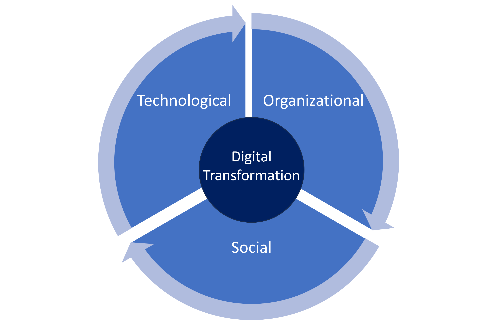

The idea of “digital transformation” refers to a process of profound and evolutionary change that affects all aspects of an organization, led by digital capabilities and technologies aimed at creating value. The fact that digital transformation is an evolutionary process indicates that the phenomenon of transformation is continuous; that is, it is maintained over time. Some authors, however, argue that digital transformation involves more radical or disruptive change than simply an evolutionary process. This is a challenging academic discussion that has been going on for a long time in which this author does not take sides because, in the end, both streams of thought are adequate lenses to tackle digital transformation.
The idea of an evolutionary process accurately describes what happens most of the time in the digital transformation of organizations in real life, although it is also true that firms must be prepared for disruptions in their routine activities and business processes when faced with digital transformation. Let’s try to understand how and why.
Digital Transformation: A Transformative Challenge
Digital transformation is a challenging undertaking that takes time to complete and is often more complex than expected. It makes products and services obsolete faster, while encouraging the emergence of new ones that are accessible through a wide variety of channels, such as websites and social applications. Digital transformation redesigns the role of people in business organizations, and prompts business leaders to rethink strategy, leadership, and organizational culture.
These substantive transformational changes invoked by digital transformation differ from the typical organizational changes in several respects. For example, the technologies involved today, such as Big Data, analytics, artificial intelligence, etc., differ substantially from previous technologies. In addition, the complexity of the environment in which most organizations operate is much greater than it was before.
Furthermore, digital technologies provide more information, computing, and connectivity capacity than ever, thus enabling new patterns of collaboration between distributed networks of actors that are more diverse. New dependencies also emerge between actors whose interests may not be fully aligned. This means that digital transformation is not limited to a specific type of business or industry, or to the implementation of particular ICTs, but also encompasses much larger and more complex ecosystems and has major organizational implications.
The Role of Digital Technologies
Digital technologies play a vital role and are the foundation of digital transformation initiatives. Notwithstanding, digital transformation is not connected to any specific technology (e.g., cloud computing, mobile phones, social media, etc.); nor is it driven by any particular digital innovation. Even those who think that using digital technologies is enough to drive change and achieve transformation are wrong. Organizations fundamentally require a set of new skills, as well as a distinctive mindset and culture to successfully tackle digital transformation. It is precisely into this set of new capabilities that digital technologies must be incorporated if the organization intends to reap the benefits of digital transformation.
Digital technologies, coupled with organizational capabilities, create endless opportunities with the potential to transform business firms, especially when they are related to new business models, operating processes, and products and services. In the end, what transformational leader should seek is to create value both for the organization and for customers by generating operational efficiencies, improving the customer experience, reducing costs, improving the relationship with stakeholders, etc.
Dimensions of Digital Transformation
Rather than worry about the evolutionary or disruptive nature of digital transformation, transformational leaders need to be aware of the three dimensions (Figure 1) that shape digital transformation.
-
The technological dimension, since digital transformation is based around the use of digital technologies that include infrastructures, networks, devices, as well as the software that makes digital applications possible.
-
The organizational dimension, since digital transformation itself entails a significant change in the organizational processes, and even in the culture and business model of the business firm.
-
The social dimension, since digital transformation is a process that affects consumer behavior and beliefs, both individually and in society (i.e., the way people consume products and services, the reasons why consumers prefer some channels to others, the way people interact with friends and family, or how people enjoy an experience). 
Figure 1: Dimensions of Digital Transformation
Source: Own elaboration
The complex interaction of these three dimensions within any digital transformation initiative means that the mere implementation of digital technologies in the organization is not enough. Rather, digital transformation encompasses far-reaching changes that extend to organizational management, the firm’s operational processes, and its own organizational culture. This large-scale change process affects all members of the organization and their way of relating to the customer, leading to improvements in the firm’s performance and the creation of competitive advantages.
Photo by pch.vector Freepik